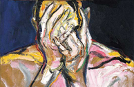
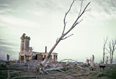
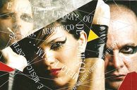
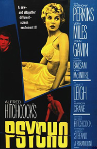
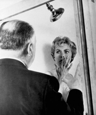

Tristan Bernard
Miradas

Pintor de cuadros
¿Qué es el arte sino la transformación poética de aquello que constituye la vida del artista? Ariel Mlynarzewicz (Buenos Aires, 1965) hace pinceladas lo cotidiano, trama sobre la tela. Un verano agobiante, un vaso de agua en manos de un niño, la gimnasia, los abrazos y hasta la muerte del padre son traducidos a obras de arte. En su pintura hay algo que prevalece: el cuerpo. Y no sólo porque en la mayoría de sus cuadros el cuerpo humano es una figura protagónica, si no también por la corporeidad del trazo de su pincel en la tela; trazos cargados, con relieve; trazos como capas que revelan el movimiento tectónico de sus inquietudes más íntimas; su modo de ver el mundo, de capturarlo, sus preguntas sobre él, plasmadas con fuerza, maestría y una inquietante habilidad para conmovernos, provocarnos. En esos cuadros y por esos trazos, se adivina el trabajo corporal que Ariel Mlynarzewicz desarrolla en cada uno, se deja ver algo de lo que lo mueve.
Hace mucho tiempo atrás, me consta, tomó un riesgo tan fuerte como determinante: trocar exposiciones de grabados, que generaban gran interés en el público, por una de pinturas vigorosas, coloridas, con cuerpo...una que inició una interesante serie. Apuesta acertada la de pegar un giro, hacer un cambio de medios y no de rumbo, algo que, quienes disfrutamos de sus cuadros, le agradecemos. Su estupenda obra es producto de esa apuesta, de sostener su compromiso con su trabajo de pintor de cuadros, de su insistencia en hacer dialogar el día a día con el arte, de su disciplina.
ESTO NO ES UNA REVISTA tiene el agrado de presentarles una galería de obras, seleccionada del catálogo de su muestra del año 2009 en el Centro Cultural Recoleta. Sin dudas, uno de los pintores más personales e impactantes del arte plástico de los últimos años, un genial trabajador de la tela y el pincel. Uno de los artistas favoritos de quienes hacemos la revista.

Fotografías
ESTO NO ES UNA REVISTA presenta un adelanto exclusivo del proyecto artístico más reciente de Eduardo Carrera, Palacio de Hielo, al que define como "una metáfora de la fotografía, que en una misma operación deslumbrante congela un momento y pone de relieve el paso del tiempo. En un sentido literal se llama Palacio de Hielo a los centros recreativos de deportes de invierno, aunque también existe una acepción más próxima al proyecto: se refiere a fantasiosas construcciones levantadas íntegramente con hielo, instaladas en espacios públicos como paseos o como atracciones en festejos populares. Mi proyecto aspira a levantar una construcción hecha de fotografía. La metáfora del palacio se ajusta, porque además de las posibilidades del lenguaje fotográfico, de por sí el problema del tiempo atraviesa el instante inmóvil en toda su fascinación y complejidad". Y si de metáforas se trata, para este número elegimos incluir siete retratos de mujeres, trabajos cotidianos para diarios y revistas, realizados en paralelo con Palacio de Hielo.

Poesía + Música + Video
Socios en la banda Modus Vivendi (1988 a1999) en Natal, Brasil, Edu Gómez y Carito retomaron, a finales de 2003, un proyecto poético musical que desarrollaron en paralelo entre 1995 y 1997. En 2004, con la reelaboración de viejas grabaciones y la creación de nuevos temas, pusieron la piedra basal de Os Poetas Elétricos y bautizaron su primer álbum con el nombre original del proyecto: Poemas Eletri-Ficados & Outros Que Foram Embora. nacidos como un dúo con fuertes influencias del universo del rock, desde la elaboración de su primer disco (2004) se dejan llevar por sonoridades y atmósferas más arriesgadas en las que mixturan música y poesía.
ESTO NO ES UNA REVISTA les presenta una entrevista a distancia y dos de los videos de estos muy interesantes poemúsicos brasileros y amigos de la casa.
La omisión de la familia Coleman | Claudio Tolcachir
por Andrea Barone
Una interesante obra, con libro y dirección de Claudio Tolcachir, disponible en la cartelera porteña. Fue pensada para los actores que la interpretan y sus personajes fueron creciendo con y por ellos vía la improvisación. Al mejor estilo Tolcachir, que hace bascular algo denso, trágico, dramático con sus toques de humor negro y sus pinceladas desopilantes, va transcurriendo un texto articulado por palabras, gestos y silencios que a veces convocan a lo inquietante a subir a escena, y que se desarrolla en dos actos, el segundo, relatando los aconteceres de cuatro días.
Texto sostenido en varias omisiones: desde la ignorancia de lo sórdido y lo patético de la cotidianeidad de esa familia, sostenida siniestra, despreocupada y fundamentalmente por la abuela, hasta lo que se calla, lo que se intenta no recordar, la omisión de lo amoroso de una madre que, “inocentemente” y sin ninguna responsabilidad, sin implicarse y con una cuota de cinismo, injuria, provoca y amenaza a sus hijos, una Meme que Miriam Odorico pone muy bien en escena. También se destaca la labor de Lautaro Perotti, dando cuerpo excelentemente a Mario, un personaje con arrebatos incalculables, preocupado por las elecciones, su quedar excluido de una que fue fundamental en su historia, llevándolo a no portar el apellido paterno; a diferencia de su hermana Vero, la elegida, nombrada por su padre, la que queda, en algunos puntos, afuera de esa familia. Y la que convoca a otro que también en varios puntos está afuera, Hernán, que es quien inaugura la posibilidad de otra historia para la otra hermana, Gabi, la que introduce en la casa algo de lo “normalmente" cotidiano de algunas casas, como el trabajo y el lavar la ropa, y quien sostiene una particular relación, fundamentalmente, con su hermano Damián, quien “trabaja” fuera de la ley.
La historia concluye con la apertura de otras nuevas historias posibles, a cargo de cada espectador, distintos avatares para cada uno de los personajes, siendo para uno la repetición de la exclusión, al compás de una música que tiñe de ironía el ambiente, cuya letra articula: que suerte que tengo una madre tan buena... que suerte la vida que corre en mis venas.
Timbre 4 | Av. Boedo 640 timbre 4 / México 3554 | Boedo | CABA | ArgentinaTel: 4932-4395
www.timbre4.com
Viernes, sábados y domingos.

por J. Martínez
Hace algún tiempo leía un comentario sobre la cantidad de gente que asegura haber leído a la sagrada tríada de la literatura argentina (Jorge Luis Borges, Bioy Casares y Ernesto Sábato, por si a alguien le quedan dudas), cuando son consultados por sus escritores favoritos. Una de las lecturas que proponía era la siguiente: nombrar a los tres o a cualquiera de ellos (incluyamos a Julio Cortázar como el cuarto en discordia) era una apuesta segura, un pleno a ganador, basado en el prestigio de la obra y en el reconocimiento de la crítica, en el canon. Similares casos pueden pensarse con la música clásica y la 5ta Sinfonía de Beethoven; con el teatro clásico y Shakespeare; las andanzas del Quijote en la literatura española o Gabriel García Márquez en el rubro Literatura Latinoamérica. Son esas bazas de la cultura indiscutida, de lo que, con mayor o menor justicia, han marcado hitos, muescas en el camino de la Humanidad. La película Psicosis (Psycho), del maestro Alfred Hitchcock es una de esas marcas. Con toda justicia, en este caso. En junio de 2010, mes en el que ESTO NO ES UNA REVISTA sale al mundo, se cumplen 50 años de su estreno.
Hagamos, pues, un breve recorrido por algunos de los méritos que han erigido a este film no sólo como a uno de los mejores de la historia, sino como una verdadera obra de arte. Hitchcock, reconocido gran maestro del cine de suspenso, ha tenido una habilidad extraordinaria para trabajar con lo velado, privilegiando la tensión por sobre la exhibición. Dos casos arquetípicos son el haber construido una excelente película de espías en la cual sólo una vez se muestra un arma o la casi total ausencia de desnudos explícitos a cámara (quien esto escribe sólo recuerda el cadáver de Frenzy) en la filmografía del autor, camino que no le impidió ser uno de los directores cuyas películas, cargadas de erotismo, le valieron la censura de los grandes estudios de Hollywood. Ese fue uno de los motivos por los cuales se le negó financiamiento para la que sería su obra más conocida y exitosa: Psicosis. En esa falta de apoyo financiero y político, se basó la elección del elenco y el desvalorizado blanco y negro, ya atropellado en los charts por el cine en color. Dificultades que el director transformó en aciertos, a puro golpe de talento y riesgo. Riesgo que multiplicó al transgredir una de las leyes fundamentales 